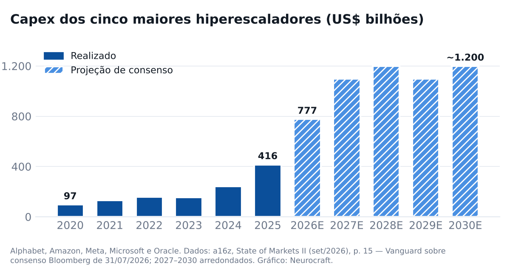
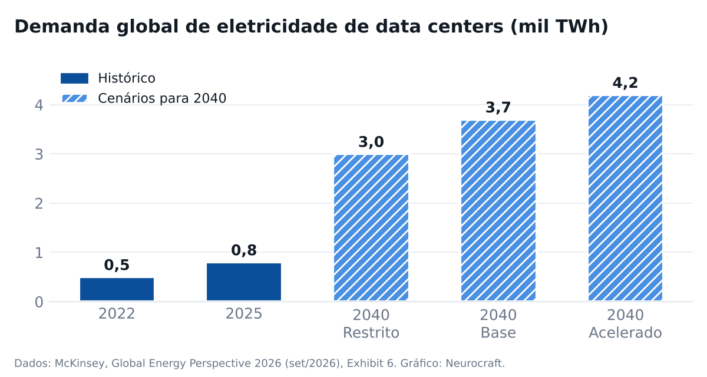

|
Neurocraft Industrial & Agentic AI · edição de outubro de 2026 |
|||||
Outubro: quem paga o piloto, o capex da IA e a energia | |||||
Esta edição trata de três temas: como a Microsoft cofinancia projetos de dados e IA, o que o State of Markets II, do a16z, mostra sobre capital e adoção, e o que a McKinsey projeta para a energia até 2050. | |||||
O mapa resume a leitura; as seções trazem gráficos e fontes. | |||||
O mês em um mapa | |||||
| |||||
Microsoft · como cofinanciar o próximo projeto | |||||
ECIF: a Microsoft paga o parceiro pela prova de conceito O End Customer Investment Funds é verba que o time comercial da Microsoft usa para pagar parceiros em provas de conceito e implantações. A conta é indicada pela própria Microsoft, o parceiro precisa estar cadastrado como fornecedor ECIF e o serviço é pago a preço de mercado. ECIF nunca é desconto de licença. E daí: Para um piloto parado por orçamento, a conversa começa com o executivo de contas da Microsoft. O financiamento costuma vir atrelado a consumo novo de nuvem — entenda a meta antes de assinar. Fifty Five and Five · 16/10/2026 | |||||
Azure Accelerate: verba, créditos e engenheiros da Microsoft sem custo O programa reúne financiamento a parceiros, créditos de Azure e o Cloud Accelerate Factory, em que engenheiros da Microsoft implantam mais de 30 serviços do Azure sem custo adicional, com o parceiro. Cobre avaliação, piloto e implantação. E daí: Parte do custo de avaliação e piloto pode sair da conta da Microsoft, se o parceiro tiver a especialização exigida. Pergunte antes de fechar o escopo. Microsoft Azure Blog · 07/07/2025 · contexto | |||||
Ano fiscal 2027: incentivos concentrados em Copilot, Fabric e Foundry Desde julho, a Microsoft reúne incentivos, financiamento e especializações sob o guarda-chuva Frontier Accelerate, com foco em Copilot, Azure AI, Fabric, Foundry, segurança e GitHub. Segundo distribuidores, o Fabric passou a figurar em duas trilhas: plataforma de dados e IA agêntica. E daí: Projetos que unem dado industrial e IA agêntica sobre Fabric estão no centro da prioridade deste ano fiscal. As regras mudam todo julho. TD SYNNEX · 23/07/2026 · contexto | |||||
a16z · State of Markets II | |||||
Capex de IA: US$ 777 bilhões em 2026 Alphabet, Amazon, Meta, Microsoft e Oracle devem investir cerca de US$ 777 bilhões em 2026, ante US$ 416 bilhões em 2025, e cerca de US$ 1,1 trilhão por ano a partir de 2027. A demanda por computação segue acima da oferta. E daí: O gargalo da IA saiu do software e foi para o mundo físico: chips, energia e rede. É o mesmo ponto a que a McKinsey chega pelo lado da energia. ValuSignal, sobre o deck do a16z (p. 15) · 06/10/2026 | |||||
 Redesenhado pela Neurocraft. Fonte: a16z, State of Markets II | |||||
a16z · adoção | |||||
Adoção ampla, mas rasa Cerca de 30% das empresas do S&P 500 relatam algum impacto quantificável da IA, mas só cerca de 2% publicam uma métrica acompanhada ao longo do tempo. No consumo, cerca de 2% dos domicílios americanos pagavam por um serviço de IA em abril. E daí: Para o comprador industrial, importa o segundo número: quase ninguém mede. Projeto de IA sem métrica acompanhada não sobrevive à próxima revisão de orçamento. a16z · 30/09/2026 · contexto | |||||
 Redesenhado pela Neurocraft. Fonte: a16z, State of Markets II | |||||
McKinsey · Global Energy Perspective 2026 | |||||
A transição virou expansão A demanda global de energia cresceu 2,7% em 2025, com petróleo, gás, carvão e renováveis crescendo ao mesmo tempo. Num dos cenários, o petróleo chega a quase 130 milhões de barris por dia em 2035. Para a McKinsey, não há mais um cenário "mais provável". E daí: Planejar só para um pico precoce do petróleo é uma aposta. O relatório pede que cada empresa defina os sinais que a fariam mudar de rota. McKinsey · 30/09/2026 · contexto | |||||
IA dos dois lados do sistema elétrico Data centers são a carga que mais cresce nos mercados da OCDE: 24% ao ano até 2030 no cenário base, com incerteza alta depois. Do lado da oferta, a McKinsey aponta a IA em previsão de rede, manutenção de ativos e engenharia — e trata a rede elétrica como o limite de velocidade do sistema. E daí: A mesma IA que pressiona a rede aparece como ferramenta de manutenção e operação de ativos. O caso de uso que paga a conta já está mapeado. McKinsey · 30/09/2026 · contexto | |||||
Brasil: suprimento diversificado, custo em alta A McKinsey classifica o Brasil entre os "independentes diversificados" (pré-sal, a maior base hidrelétrica do G20 e biocombustíveis), mas entre os países em que o custo do sistema elétrico pode crescer mais que o PIB até 2050. E daí: O desafio brasileiro é de custo, não de suprimento. Eficiência operacional vira argumento de política energética, não só de margem. McKinsey · 30/09/2026 · contexto | |||||
 Redesenhado pela Neurocraft. Fonte: McKinsey, Global Energy Perspective 2026 | |||||
Leitura conjunta · capital, energia e medida | |||||
Lidos juntos, os três documentos contam uma história só. O a16z mostra o capital: centenas de bilhões por ano em chips, data centers e energia. A McKinsey mostra a conta física: a rede é o limite de velocidade e a eletricidade de data centers cresce 24% ao ano até 2030. A Microsoft mostra quem paga para a adoção acontecer: ela cofinancia piloto e implantação para que o consumo apareça. | |||||
O elo fraco está no meio: só cerca de 2% das empresas do S&P 500 publicam uma métrica de IA acompanhada no tempo. Financiamento resolve o custo do piloto, não a falta de medida. | |||||
Antes de pedir verba, duas perguntas internas: | |||||
1. Que métrica operacional este projeto vai mover, e quem a acompanha depois da entrega? | |||||
2. O consumo de nuvem projetado no escopo cabe no orçamento do ano seguinte, quando o financiamento acabar? | |||||
Fontes: a16z, State of Markets II · McKinsey, Global Energy Perspective 2026 · Fifty Five and Five — ECIF | |||||
Números do mês | |||||
| |||||
| |||||
|
Você recebe esta edição porque já conversamos sobre dados e operação. Responder chega direto em Guilherme.Cleffe@neurocraft.ai, e as respostas são lidas e respondidas. Se preferir não receber as próximas, basta responder dizendo isso numa linha. © 2026 Neurocraft |